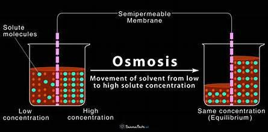
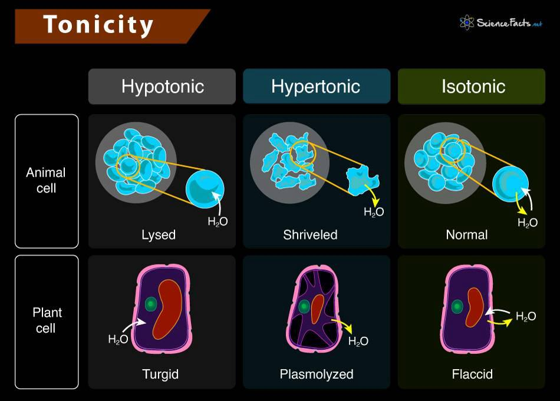
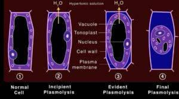

Osmoregulation is a key part of maintaining homeostasis, keeping a cell's internal environment stable, specifically its water and solute (like salts, sugars) concentration. The star player here is osmosis.
- Osmosis: Osmosis is the net movement of water across a selectively permeable membrane (like a cell membrane). Water doesn't just move randomly; it flows from an area where it's more concentrated (or where solutes are less concentrated – think high water potential) to an area where it's less concentrated (or where solutes are more concentrated – think low water potential). Water essentially tries to dilute the more concentrated solution.

Now, let's see what happens when we put cells into different types of solutions. We describe these solutions relative to the cell's internal environment:
- Isotonic Solution ("Iso" = Same, "Tonos" = Strength):
- Meaning: The concentration of solutes outside the cell is the same as the concentration of solutes inside the cell. The water potential is equal internally and externally.
- Water Movement: Water molecules move in and out at an equal rate. There's NO NET movement of water.
- Effect on Animal Cells (e.g., red blood cell): The cell remains stable, maintaining its normal shape. This is the ideal state for animal cells.
- Effect on Plant Cells: The cell is flaccid (limp). There's no net water entry to push the cell membrane firmly against the cell wall. While not damaging, this doesn't provide structural support to the plant.
- Hypotonic Solution ("Hypo" = Under, Lower):
- Meaning: The concentration of solutes outside the cell is lower than inside the cell. This means the water potential outside is higher than inside.
- Water Movement: Water moves into the cell by osmosis.
- Effect on Animal Cells: The cell swells up. Since animal cells lack a rigid cell wall, they can burst if the water influx is too great. This bursting is called lysis (or hemolysis for red blood cells).
- Effect on Plant Cells: Water enters the large central vacuole and the cytoplasm, causing the protoplast (the cell membrane and everything within it) to swell and push against the rigid cell wall. The cell becomes turgid (firm and swollen).
- Turgor Pressure: This is the outward hydrostatic pressure exerted by the swollen protoplast against the plant cell wall. It's crucial for plants: it provides structural support (keeps herbaceous plants upright), is essential for cell elongation and growth, and helps in the opening of stomata.
- The cell wall exerts an equal and opposite pressure called wall pressure, preventing the cell from bursting. When turgor pressure is high, the cell is fully turgid.
- Hypertonic Solution ("Hyper" = Over, Higher):
- Meaning: The concentration of solutes outside the cell is higher than inside the cell. This means the water potential outside is lower than inside.
- Water Movement: Water moves out of the cell by osmosis.
- Effect on Animal Cells: The cell loses water and shrinks, often becoming shriveled or distorted. This is called crenation.
- Effect on Plant Cells: The cell loses water, primarily from the vacuole and cytoplasm.
- The protoplast shrinks and pulls away from the cell wall. This process is called plasmolysis, and the cell is said to be plasmolysed.
- Initially, as the cell loses water, it becomes flaccid (turgor pressure drops to zero).
- Incipient Plasmolysis: This is the critical stage where water loss has caused the turgor pressure to become zero, and the protoplast is just beginning to pull away from the cell wall, usually at the corners. The cell volume has decreased slightly.
- Full Plasmolysis: If water loss continues, the protoplast shrinks further, detaching more noticeably from the cell wall. The space between the cell wall and the shrunken protoplast gets filled with the external hypertonic solution. A plasmolysed cell is very limp and cannot function properly. Severe or prolonged plasmolysis can lead to cell death.

*This diagram shows the effects of tonicity in Animal and plant cell.
Summary of Key Plant Cell States:
- Turgid: Cell in a hypotonic solution, full of water, high turgor pressure, protoplast pushing firmly against the cell wall (healthy state for most plant cells).
- Flaccid: Cell in an isotonic solution, or the state reached just as turgor pressure drops to zero when moving from turgid to plasmolysed. Limp.
- Plasmolysis: Cell in a hypertonic solution, significant water loss, protoplast has visibly shrunk and pulled away from the cell wall.

Written by Parthipan Kasiban